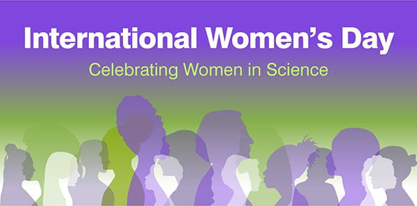
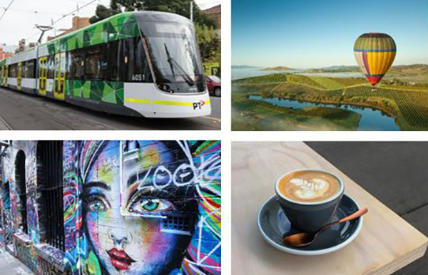

Express your interest to run a Workshop at IUCr 2023The Local Organising Committee of IUCr 2023 is excited to announce that they are now accepting expressions of interest for individuals or groups to hold workshops immediately prior to the Congress. Workshops will be held on Monday 21 and Tuesday 22 August, 2023. Workshops can be half-day, full day or two full days in length, and should be unique content that would fall outside the usual meeting and symposium format occur during the Congress itself. If you would like to host a workshop for IUCr 2023 please see the full requirements and terms and conditions on the website and complete the Expression of Interest form by midnight (AEST) on Thursday 21 July 2022
|
A Crystallographic tour of Australia and New ZealandThe IUCr 2023 Congress is being hosted by the Society of Crystallographers of Australia and New Zealand, and we’d like to take the opportunity in these regular e-zines to pull a focus on some of the crystallography connections in our part of the world. Adelaide – A city to Bragg about
‘The gift of expression is important to them as scientists; the best research is wasted when it is extremely difficult to discover what it is all about …’ W.L. Bragg Our next stop in this crystallographic tour of Australia and New Zealand is the city of Adelaide! Adelaide, which is located on the traditional lands of the Kaurna people, has a strong connection to crystallography - with one of the founders of the field, W.L. Bragg, being born here in 1890. His father, W.H. Bragg, had moved to Adelaide in 1885 to take up a professorship at the University of Adelaide, with W.L. also beginning his studies in physics there too. As many of us will know, W.L Bragg together with his father, WH Bragg, and Max von Laue put together the methods and equations that describes how the phenomena of diffraction can lead to an understanding of where atoms are in a structure. W.L. Bragg still is the youngest recipient of the Nobel Prize for Physics, he was 25 when he was recognised for his efforts in determining the first crystal structures from diffraction. Adelaide is a beautiful city to visit, with a CBD surrounded by parkland and the city circled by world-famous vineyards. As well as a trip along the river, you could take in some of the renowned museums such as the Art Gallery of South Australia, displaying expansive collections including noted Indigenous art, or the South Australian Museum which is devoted to natural history (and hosts a fantastic mineralogy department). For those of you wanting a sporting fix, the Adelaide Oval hosts cricket and Australian rules football matches throughout the year. Wine regions around Adelaide, include the Barossa Valley, is steeped in history and German heritage, swathed in rolling landscapes of vines, orchards, pasture and bushland and full of great characters. To the West of Adelaide lies the coast and the St. Vincent Gulf, with miles of beaches, including one where a young W.L. Bragg discovered a new cuttlefish, which was named Sepia Braggii after him. You can read much more about W.L Bragg and his father in the book ‘William and Lawrence Bragg, Father and Son - The Most Extraordinary Collaboration in Science’ written by Australian author, John Jenkin. Today, on International Women’s Day we have a reason to pause and reflect on progress, but also future challenges to gender equality. Crystallography is a very unusual science in the landscape of gender equality, with strongly diverse beginnings, which are widely lauded. There have been many celebrated female role models, including two Nobel prize winners. Lonsdale, Hodgkin, Franklin, Megaw and Yonath are but a few of the distinguished women crystallographers in the field. We were very proud to honour one of our own expatriate woman crystallographers in 2021 with Eleanor Dodson being elected as a Fellow of the Australian Academy of Science. Looking to the future we are working to make IUCr 2023 as inclusive as possible. |
Key DatesThe Congress will offer you a unique Crystallographic experience, and set against the backdrop of the Food and Wine, Sport and Science super city that is Melbourne, we know it is going to be an event not to be missed! Lock 21 – 29 August 2023 in your diaries now and stay connected by registering your expression of interest and prepare to turn crystallography upside down.
|
Marvellous MelbourneA packed agenda of food, wine, sports and arts as your introduction to the best of Melbourne – from its creative, exciting city centre, to its buzzing neighbourhood hubs. It's the gateway to Victoria's world-class wineries, natural springs, peninsulas, spectacular coastline and alpine villages, making it the ideal destination for easy access to pre and post Congress touring. Visitors will find Melbourne an exciting city to explore. Modern architecture and design is juxtaposed with heritage buildings reflecting Australia’s cultural history. But beneath the city’s impressive façade, lies the true heart and soul of the city; laneways which snake the city grid to reveal cafes and bars, fashion houses, boutiques, innovative cuisine, galleries, theatres and museums. Melbourne has a lively passion for social eating and drinking, which is reflected in the thousands of restaurants serving up gastronomic experiences from around the world. Everywhere you will uncover a vast array of fashionable cafes, where you can enjoy Melbourne's existential coffee and cafe culture to the fullest. Seize the moment while you can, and join us at the Congress in this incredible city!
|
Report of the 47th Lorne Proteins Conference
|